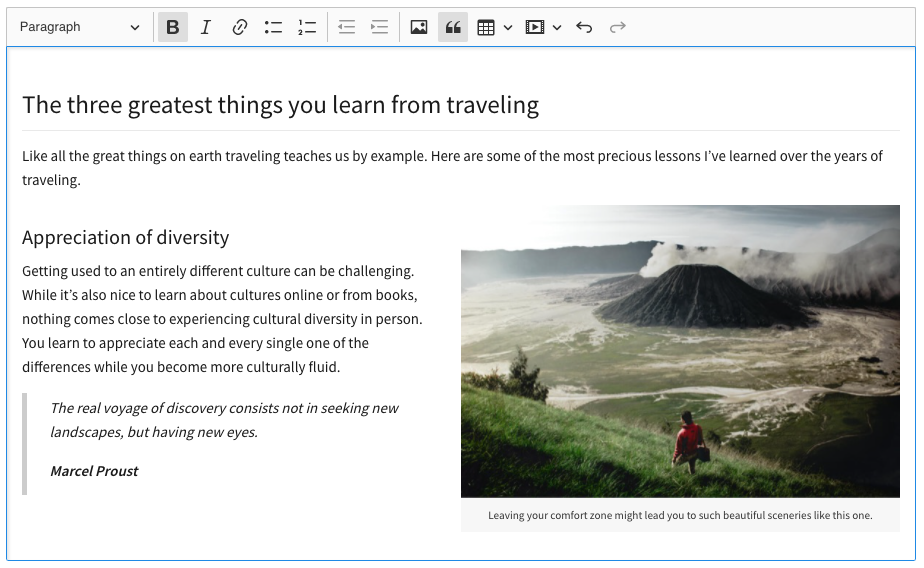

Predefined CKEditor 5 builds
Predefined CKEditor 5 builds
# Overview
Predefined CKEditor 5 builds are a set of ready-to-use rich text editors. Every “build” provides a single type of editor with a set of features and a default configuration. They provide convenient solutions that can be installed with no effort and that satisfy the most common editing use cases.
The following CKEditor 5 builds are currently available:
# Basic information
Each build was designed to satisfy as many use cases as possible. They differ in their UI, UX and features. A full list of plugins available in each build can be found in a later part of this guide.
# When NOT to use predefined builds?
CKEditor 5 Framework or a custom build should be used, instead of predefined builds, in the following cases:
- When you want to create your own text editor and have full control over its every aspect, from UI to features.
- When the solution proposed by the builds does not fit your specific use case.
# Download options
There are several options to download predefined CKEditor 5 builds:
# CDN
Predefined CKEditor 5 builds can be loaded inside pages directly from CKEditor CDN, which is optimized for worldwide super-fast content delivery. When using CDN no download is actually needed. CKEditor is hosted on servers spread across the globe – the scripts are loaded faster because they are served from the nearest locations to the end user. If the same version of CKEditor has already been downloaded (even on a different website), it is loaded from cache. Using CDN reduces the number of HTTP requests handled by your server so it speeds it up as well.
However, CDN only offers ready-to-use, predefined packages (CKEditor 5 builds). This limits its customization capabilities.
# npm
All predefined builds are released on npm. Use this search link to view all official build packages available in npm.
Installing a build with npm is as simple as calling one of the following commands in your project:
npm install --save @ckeditor/ckeditor5-build-classic
# Or:
npm install --save @ckeditor/ckeditor5-build-inline
# Or:
npm install --save @ckeditor/ckeditor5-build-balloon
# Or:
npm install --save @ckeditor/ckeditor5-build-balloon-block
# Or:
npm install --save @ckeditor/ckeditor5-build-decoupled-document
CKEditor 5 will then be available at node_modules/@ckeditor/ckeditor5-build-[name]/build/ckeditor.js. It can also be imported directly to your code by require( '@ckeditor/ckeditor5-build-[name]' ).
# Online builder
The online builder lets you download CKEditor 5 builds and also allows you to create your own, customized builds (with a different set of plugins) in a few easy steps, through a simple and intuitive UI.
# Zip download
Go to the CKEditor 5 download page and download your preferred build. For example, you may download the ckeditor5-build-classic-32.0.0.zip file for the classic editor build.
Extract the .zip file into a dedicated directory inside your project. It is recommended to include the editor version in the directory name to ensure proper cache invalidation once a new version of CKEditor 5 is installed.
# Included files
ckeditor.js– The ready-to-use editor bundle, containing the editor and all plugins.ckeditor.js.map– The source map for the editor bundle.translations/– The editor UI translations (see Setting the UI language).README.mdandLICENSE.md
# Loading the API
After downloading and installing a predefined CKEditor 5 build in your application, it is time to make the editor API available in your pages. For that purpose, it is enough to load the API entry point script:
<script src="[ckeditor-build-path]/ckeditor.js"></script>
Once the CKEditor script is loaded, you can use the API to create editors in your page.
The build/ckeditor.js file is generated in the UMD format so you can also import it into your application if you use CommonJS modules (like in Node.js) or AMD modules (like in Require.js). Read more in the UMD support section.
# Available builds
# Classic editor
Classic editor is what most users traditionally learnt to associate with a rich-text editor — a toolbar with an editing area placed in a specific position on the page, usually as a part of a form that you use to submit some content to the server.
During its initialization the editor hides the used editable element on the page and renders “instead” of it. This is why it is usually used to replace <textarea> elements.
In CKEditor 5 the concept of the “boxed” editor was reinvented:
- The toolbar is now always visible when the user scrolls the page down.
- The editor content is now placed inline in the page (without the surrounding
<iframe>element) — it is now much easier to style it. - By default the editor now grows automatically with the content.

To try it out online, check the classic editor example.
# Installation example
In your HTML page add an element that CKEditor 5 should replace:
<div id="editor"></div>
Load the classic editor build (here, the CDN location is used):
<script src="https://cdn.ckeditor.com/ckeditor5/36.0.1/classic/ckeditor.js"></script>
Alternatively, you may install CKEditor 5 from npm:
npm install --save @ckeditor/ckeditor5-build-classic
Then bundle it together with your app.
Call the ClassicEditor.create() method.
<script>
ClassicEditor
.create( document.querySelector( '#editor' ) )
.catch( error => {
console.error( error );
} );
</script>
Full code example:
<!DOCTYPE html>
<html lang="en">
<head>
<meta charset="utf-8">
<title>CKEditor 5 – Classic editor</title>
<script src="https://cdn.ckeditor.com/ckeditor5/36.0.1/classic/ckeditor.js"></script>
</head>
<body>
<h1>Classic editor</h1>
<div id="editor">
<p>This is some sample content.</p>
</div>
<script>
ClassicEditor
.create( document.querySelector( '#editor' ) )
.catch( error => {
console.error( error );
} );
</script>
</body>
</html>
# Inline editor
Inline editor comes with a floating toolbar that becomes visible when the editor is focused (e.g. by clicking it). Unlike classic editor, inline editor does not render instead of the given element, it simply makes it editable. As a consequence the styles of the edited content will be exactly the same before and after the editor is created.
A common scenario for using inline editor is offering users the possibility to edit content in its real location on a web page instead of doing it in a separate administration section.

To try it out online, check the inline editor example.
# Installation example
In your HTML page add an element that CKEditor 5 should make editable:
<div id="editor"></div>
Load the inline editor build (here, the CDN location is used):
<script src="https://cdn.ckeditor.com/ckeditor5/36.0.1/inline/ckeditor.js"></script>
Alternatively, you may install CKEditor 5 from npm:
npm install --save @ckeditor/ckeditor5-build-inline
Then bundle it together with your app.
Call the InlineEditor.create() method.
<script>
InlineEditor
.create( document.querySelector( '#editor' ) )
.catch( error => {
console.error( error );
} );
</script>
Full code example:
<!DOCTYPE html>
<html lang="en">
<head>
<meta charset="utf-8">
<title>CKEditor 5 - Inline editor</title>
<script src="https://cdn.ckeditor.com/ckeditor5/36.0.1/inline/ckeditor.js"></script>
</head>
<body>
<h1>Inline editor</h1>
<div id="editor">
<p>This is some sample content.</p>
</div>
<script>
InlineEditor
.create( document.querySelector( '#editor' ) )
.catch( error => {
console.error( error );
} );
</script>
</body>
</html>
# Balloon editor
Balloon editor is very similar to inline editor. The difference between them is that the toolbar appears in a balloon next to the selection (when the selection is not empty):

To try it out online, check the balloon editor example.
# Installation example
In your HTML page add an element that CKEditor 5 should make editable:
<div id="editor"></div>
Load the balloon editor build (here CDN location is used):
<script src="https://cdn.ckeditor.com/ckeditor5/36.0.1/balloon/ckeditor.js"></script>
Alternatively, you may install CKEditor 5 from npm:
npm install --save @ckeditor/ckeditor5-build-balloon
Then bundle it together with your app.
Call the BalloonEditor.create() method.
<script>
BalloonEditor
.create( document.querySelector( '#editor' ) )
.catch( error => {
console.error( error );
} );
</script>
Full example:
<!DOCTYPE html>
<html lang="en">
<head>
<meta charset="utf-8">
<title>CKEditor 5 – Balloon editor</title>
<script src="https://cdn.ckeditor.com/ckeditor5/36.0.1/balloon/ckeditor.js"></script>
</head>
<body>
<h1>Balloon editor</h1>
<div id="editor">
<p>This is some sample content.</p>
</div>
<script>
BalloonEditor
.create( document.querySelector( '#editor' ) )
.catch( error => {
console.error( error );
} );
</script>
</body>
</html>
# Balloon block editor
Balloon block is essentially the balloon editor with an extra block toolbar which can be accessed using the button attached to the editable content area and following the selection in the document. The toolbar gives an access to additional, block–level editing features.

To try it out online, check the balloon block editor example.
# Installation example
In your HTML page add an element that CKEditor 5 should make editable:
<div id="editor"></div>
Load the balloon block editor build (here, the CDN location is used):
<script src="https://cdn.ckeditor.com/ckeditor5/36.0.1/balloon-block/ckeditor.js"></script>
Alternatively, you may install CKEditor 5 from npm:
npm install --save @ckeditor/ckeditor5-build-balloon-block
Then bundle it together with your app.
Call the BalloonEditor.create() method.
<script>
BalloonEditor
.create( document.querySelector( '#editor' ) )
.catch( error => {
console.error( error );
} );
</script>
Note: You can configure the block toolbar items using the config.blockToolbar option.
Full code example:
<!DOCTYPE html>
<html lang="en">
<head>
<meta charset="utf-8">
<title>CKEditor 5 – Balloon block editor</title>
<script src="https://cdn.ckeditor.com/ckeditor5/36.0.1/balloon-block/ckeditor.js"></script>
</head>
<body>
<h1>Balloon editor</h1>
<div id="editor">
<p>This is some sample content.</p>
</div>
<script>
BalloonEditor
.create( document.querySelector( '#editor' ) )
.catch( error => {
console.error( error );
} );
</script>
</body>
</html>
# Document editor
The document editor is focused on rich-text editing experience similar to the native word processors. It works best for creating documents which are usually later printed or exported to PDF files.

To try it out online, check the document editor example.
# Installation example
Load the document editor build (here, the CDN location is used):
<script src="https://cdn.ckeditor.com/ckeditor5/36.0.1/decoupled-document/ckeditor.js"></script>
Alternatively, you may install CKEditor 5 from npm:
npm install --save @ckeditor/ckeditor5-build-decoupled-document
Then bundle it together with your app.
Call the DecoupledEditor.create() method. The decoupled editor requires you to inject the toolbar into the DOM and the best place to do that is somewhere in the promise chain (e.g. one of the then( () => { ... } ) blocks).
The following snippet will run the document editor but to make the most of it check out the comprehensive tutorial which explains step—by—step how to configure and style the application for the best editing experience.
<script>
DecoupledEditor
.create( document.querySelector( '#editor' ) )
.then( editor => {
const toolbarContainer = document.querySelector( '#toolbar-container' );
toolbarContainer.appendChild( editor.ui.view.toolbar.element );
} )
.catch( error => {
console.error( error );
} );
</script>
Full code example:
<!DOCTYPE html>
<html lang="en">
<head>
<meta charset="utf-8">
<title>CKEditor 5 – Document editor</title>
<script src="https://cdn.ckeditor.com/ckeditor5/36.0.1/decoupled-document/ckeditor.js"></script>
</head>
<body>
<h1>Document editor</h1>
<!-- The toolbar will be rendered in this container. -->
<div id="toolbar-container"></div>
<!-- This container will become the editable. -->
<div id="editor">
<p>This is the initial editor content.</p>
</div>
<script>
DecoupledEditor
.create( document.querySelector( '#editor' ) )
.then( editor => {
const toolbarContainer = document.querySelector( '#toolbar-container' );
toolbarContainer.appendChild( editor.ui.view.toolbar.element );
} )
.catch( error => {
console.error( error );
} );
</script>
</body>
</html>
# Superbuild
The superbuild, available instantly from CDN, is a preconfigured package that offers access to almost all available plugins and all predefined editor types.
Please consider, that the superbuild contains a really whole lot of code. A good portion of that code may not be needed in your implementation, so using the superbuild should be considered for evaluation purposes and tests rather, than for the production environment.
We strongly advise using the Online builder approach or building the editor from source to create customized and efficient production-environment solutions. You can also try out one of the other predefined builds instead.
# Installation example
Please refer to the CDN installation quick start to learn how to utilize the superbuild.
# List of plugins included in the CKEditor 5 predefined builds
The table below presents the list of all plugins included in various builds.
| Plugin | Classic | Inline | Balloon | Balloon block | Document | Superbuild |
| Alignment | ❌ | ❌ | ❌ | ❌ | ✅ | ✅ |
| Autoformat | ✅ | ✅ | ✅ | ✅ | ✅ | ✅ |
| AutoImage | ❌ | ❌ | ❌ | ❌ | ❌ | ✅ |
| Autolink | ✅ | ✅ | ✅ | ✅ | ✅ | ✅ |
| Base64UploadAdapter | ❌ | ❌ | ❌ | ❌ | ❌ | ✅ |
| BlockQuote | ✅ | ✅ | ✅ | ✅ | ✅ | ✅ |
| Bold | ✅ | ✅ | ✅ | ✅ | ✅ | ✅ |
| CKBox | ✅ | ✅ | ✅ | ✅ | ✅ | ✅ |
| CKFinder | ✅ | ✅ | ✅ | ✅ | ✅ | ✅ |
| CloudServices | ✅ | ✅ | ✅ | ✅ | ✅ | ✅ |
| Code | ❌ | ❌ | ❌ | ❌ | ❌ | ✅ |
| CodeBlock | ❌ | ❌ | ❌ | ❌ | ❌ | ✅ |
| Comments | ❌ | ❌ | ❌ | ❌ | ❌ | ✅ |
| DocumentList + | ❌ | ❌ | ❌ | ❌ | ❌ | ❌ |
| EasyImage | ✅ | ✅ | ✅ | ✅ | ✅ | ✅ |
| Essentials * | ✅ | ✅ | ✅ | ✅ | ✅ | ✅ |
| ExportPdf | ❌ | ❌ | ❌ | ❌ | ❌ | ✅ |
| ExportWord | ❌ | ❌ | ❌ | ❌ | ❌ | ✅ |
| FindAndReplace | ❌ | ❌ | ❌ | ❌ | ❌ | ✅ |
| FontBackgroundColor, FontColor, FontFamily, FontSize | ❌ | ❌ | ❌ | ❌ | ✅ | ✅ |
| GeneralHtmlSupport | ❌ | ❌ | ❌ | ❌ | ❌ | ✅ |
| Heading | ✅ | ✅ | ✅ | ✅ | ✅ | ✅ |
| Highlight | ❌ | ❌ | ❌ | ❌ | ❌ | ✅ |
| HorizontalLine | ❌ | ❌ | ❌ | ❌ | ❌ | ✅ |
| HtmlComment | ❌ | ❌ | ❌ | ❌ | ❌ | ✅ |
| HtmlEmbed | ❌ | ❌ | ❌ | ❌ | ❌ | ✅ |
| Image | ✅ | ✅ | ✅ | ✅ | ✅ | ✅ |
| ImageCaption | ✅ | ✅ | ✅ | ✅ | ✅ | ✅ |
| ImageResize | ❌ | ❌ | ❌ | ❌ | ✅ | ✅ |
| ImageStyle | ✅ | ✅ | ✅ | ✅ | ✅ | ✅ |
| ImageToolbar | ✅ | ✅ | ✅ | ✅ | ✅ | ✅ |
| ImageUpload | ✅ | ✅ | ✅ | ✅ | ✅ | ✅ |
| ImageInsert | ❌ | ❌ | ❌ | ❌ | ❌ | ✅ |
| ImportWord | ❌ | ❌ | ❌ | ❌ | ❌ | ❌ |
| Indent | ✅ | ✅ | ✅ | ✅ | ✅ | ✅ |
| IndentBlock | ❌ | ❌ | ❌ | ❌ | ✅ | ✅ |
| Italic | ✅ | ✅ | ✅ | ✅ | ✅ | ✅ |
| Link | ✅ | ✅ | ✅ | ✅ | ✅ | ✅ |
| LinkImage | ❌ | ❌ | ❌ | ❌ | ❌ | ✅ |
| List + | ✅ | ✅ | ✅ | ✅ | ✅ | ✅ |
| ListProperties | ❌ | ❌ | ❌ | ❌ | ✅ | ✅ |
| MathType | ❌ | ❌ | ❌ | ❌ | ❌ | ✅ |
| MediaEmbed | ✅ | ✅ | ✅ | ✅ | ✅ | ✅ |
| Mentions | ❌ | ❌ | ❌ | ❌ | ❌ | ✅ |
| PageBreak | ❌ | ❌ | ❌ | ❌ | ❌ | ✅ |
| Pagination | ❌ | ❌ | ❌ | ❌ | ❌ | ✅ |
| Paragraph * | ✅ | ✅ | ✅ | ✅ | ✅ | ✅ |
| PasteFromOffice | ✅ | ✅ | ✅ | ✅ | ✅ | ✅ |
| PictureEditing | ✅ | ✅ | ✅ | ✅ | ✅ | ✅ |
| PresenceList | ❌ | ❌ | ❌ | ❌ | ❌ | ✅ |
| RealTimeCollaborativeEditing, RealTimeCollaborativeComments, RealTimeCollaborativeRevisionHistory, RealTimeCollaborativeTrackChanges | ❌ | ❌ | ❌ | ❌ | ❌ | ✅ |
| RemoveFormat | ❌ | ❌ | ❌ | ❌ | ❌ | ✅ |
| RevisionHistory | ❌ | ❌ | ❌ | ❌ | ❌ | ✅ |
| StandardEditingMode | ❌ | ❌ | ❌ | ❌ | ❌ | ✅ |
| SpecialCharacters | ❌ | ❌ | ❌ | ❌ | ❌ | ✅ |
| Strikethrough | ❌ | ❌ | ❌ | ❌ | ✅ | ✅ |
| Subscript | ❌ | ❌ | ❌ | ❌ | ❌ | ✅ |
| Superscript | ❌ | ❌ | ❌ | ❌ | ❌ | ✅ |
| Table, TableToolbar | ✅ | ✅ | ✅ | ✅ | ✅ | ✅ |
| TextPartLanguage | ❌ | ❌ | ❌ | ❌ | ❌ | ✅ |
| TextTransformation | ✅ | ✅ | ✅ | ✅ | ✅ | ✅ |
| TodoList | ❌ | ❌ | ❌ | ❌ | ❌ | ✅ |
| TrackChanges | ❌ | ❌ | ❌ | ❌ | ❌ | ✅ |
| TrackChangesData | ❌ | ❌ | ❌ | ❌ | ❌ | ✅ |
| Underline | ❌ | ❌ | ❌ | ❌ | ✅ | ✅ |
| UploadAdapter | ✅ | ✅ | ✅ | ✅ | ✅ | ✅ |
| WordCount | ❌ | ❌ | ❌ | ❌ | ❌ | ✅ |
| WProofreader | ❌ | ❌ | ❌ | ❌ | ❌ | ✅ |
Important notes
Plugins denoted with an asterisk (*) are essential for the editor to work and should never be removed.
The two list plugins denoted with a plus (+) can only be used separately.
The document lists feature is required by the import from Word plugin to run correctly.
# UMD support
Because builds are distributed as UMD modules, editor classes can be retrieved in various ways:
- by a CommonJS-compatible loader (e.g. webpack or Browserify),
- by RequireJS (or any other AMD library),
- from the global namespace if none of the above loaders is available.
For example:
// In the CommonJS environment.
const ClassicEditor = require( '@ckeditor/ckeditor5-build-classic' );
ClassicEditor.create( ... ); // [Function]
// If AMD is present, you can do this.
require( [ 'path/to/ckeditor5-build-classic/build/ckeditor' ], ClassicEditor => {
ClassicEditor.create( ... ); // [Function]
} );
// As a global variable.
ClassicEditor.create( ... ); // [Function]
// As an ES6 module (if using webpack or Rollup).
import ClassicEditor from '@ckeditor/ckeditor5-build-classic';
ClassicEditor.create( ... ); // [Function]
Every day, we work hard to keep our documentation complete. Have you spotted outdated information? Is something missing? Please report it via our issue tracker.